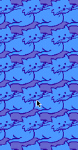

THE ROOM A MONOCHROME 'COMB, myself a bellicose drone. The bedspreads, which I quickly stuff under the bed, have awful azure cats. The easy chair is violet vinyl. Room service brings a slice of excellent pecan pie which I have a little difficulty getting started on with visions of insect skeletons troubling nether consciousness. It starts with the curtains, whose furious blue pattern of pinecones and porcupines (what the HELL was that designer on?) preoccupy the mind's eye even after lenses shut. Shit, I've got to get out of this business.
The curtains shut so I can't see the design on the curtains, lights extinguished, there returns a full-spectrum ecstasy of pinwheels and kaleidoscopes in mind. Why is it now geometric when back around Woodstock it was organic shapes, mostly indicating decay? Maybe it has something to do with how happy I was then. I can take it, prescience of my own decomposition. Now spheres and triangles is all mind has it in itself to tolerate in the way of psychotropic recreation.
Peeing is still an awful lot of fun: behold the miracle of a caracole flow created by the rushing stream in such a magnificently ovular bowl. Where you flush, nobody knows. The thud on the door is as sullen and sudden as ever there was. The chain comes off and the latch turned in what looks like hours to my far-away head. I hope it will be that pretty sister but I expect good ol' Ron.